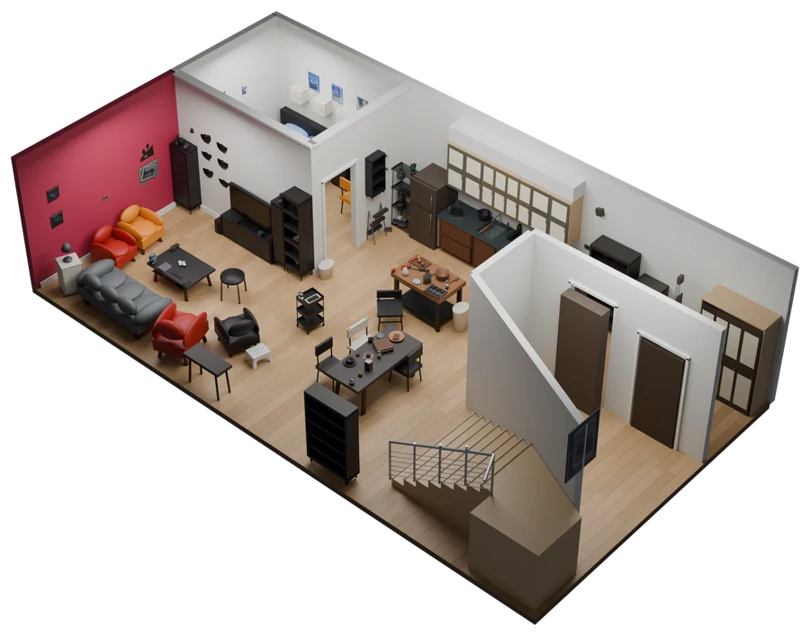

Finding 1
Executable states help when a task is a direct geometric operation on 3D structure, such as changing the viewpoint or moving rigid objects.
* equal contribution
Formulation
Video reasoning and generation both depend on the underlying world state: which entities exist, where they are, and how they and the camera move. VideoCoS makes that state explicit as an executable Blender program, built once per video, and asks when this helps.
A perception-grounded coding agent reconstructs a reusable scene program from raw video. It reads depth, camera poses, tracks and 3D boxes, then loops: write code, execute it, check and render, repair.
A separate reasoning agent works from the program alone. It answers with state queries: find objects, measure them, take an imagined viewpoint, replay the camera’s history.
The same agent edits the state and renders it: a new camera for novel-view synthesis, new object poses for goal-conditioned planning, forward simulation for future prediction.
Interactive
Each scene below is an executable world state, exported from its Blender file. Four things to try:

# Click an object to read its record.
The kitchen, bedroom, classroom and bathroom were codified by VideoCoS from raw video (rooms of VSI-Bench); their meshes are thinned for the web. The console values are computed in your browser from each object’s world-space bounds, the quantity the harness tools inspect_entities and measure_pair(metric="center") report: metres, Blender axes, Z up. Outer walls between you and the room are hidden.
Results
Each task family probes a different component of the state: its entities, their geometry over time, or the camera. Benchmarks ship no ground-truth scene programs, so every state below was inferred from raw video.
VSI-Bench-Debiased. The same reasoner answers from the video, or from a codified scene alone. Viewpoint questions gain most, by 21.9 and 17.5 points for GPT and Gemini; history questions lose for every reasoner.
Below, each room’s raw video beside three codified scenes of it: two from the agents of BVB, one from VideoCoS, each rendered through its own estimated camera.
Clips run at twice real time. These five rooms were chosen among those where the VideoCoS scene answers more questions. BVB’s scenes often look cleaner; VideoCoS follows the camera pose and the object layout of the video more closely.
Kubric-4D. The agent writes only the camera, and Blender renders the same scene again. VideoCoS leads on both metrics at every camera shift, and its object mIoU stays at 0.224 to 0.254 from 42° to 128°.
Ego2Act. From one start photo and a goal, the agent keyframes rigid object motion in Blender. Rendered in Blender, VideoCoS has the second-highest task score after Seedance-2.0, and the lowest physical score: the plan has no hand. Conditioning MiniMax-H3 on the plan adds one. The clips compare it with four video generators.
The baseline clips are the generations released with Ego2Act (seed 101); a clip shorter than 15 seconds holds its last frame. The Blender + MiniMax-H3 clips use the full MiniMax-H3 model.
Physics-IQ. The agent sets up rigid-body physics in the codified scene and simulates the next five seconds. Its rigid trajectory error (11.1) is close to Cosmos3 (10.3 and 10.5) and well below MiniMax-H3 (16.1); on non-rigid motion and on the Physics-IQ score it trails.
Every method continues the same three observed seconds; the clips are its next five. The Blender + MiniMax-H3 clips use the full MiniMax-H3 model.
Findings
Finding 1
Executable states help when a task is a direct geometric operation on 3D structure, such as changing the viewpoint or moving rigid objects.
Finding 2
Executable states fall short when an answer combines several noisy state estimates or requires physical realism (hands, non-rigid dynamics, photorealism).
Finding 3
Executable states can beat video despite imperfect reconstruction, but error tolerance varies by task, and a wrong state hurts more than a missing one.
Cite
@article{yu2026videocos,
title = {VideoCoS: When Do Executable World States Help Video Reasoning and Generation?},
author = {Yu, Shoubin and Lee, Daeun and Wang, Zun and Lin, Han and Zhang, Yue and Bansal, Mohit},
journal = {arXiv preprint},
year = {2026}
}